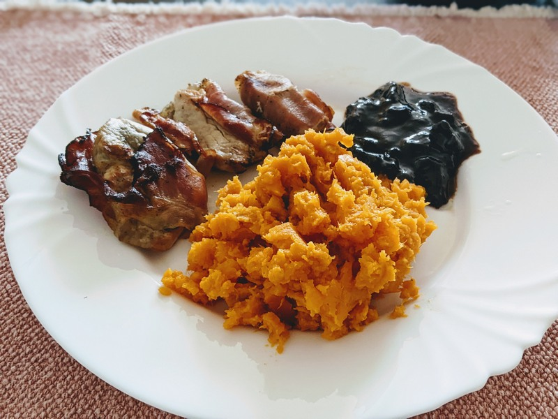

Za poslední dobu jsem vyzkoušela docela dost nových receptů, které nám doma zachutnaly, ale byla jsem dosud líná si je tady uložit, tak snad to postupně napravím, než je všechny pozapomenu :-) Jedním z nich je i tento můj tip na slavnostní oběd, až se budete chtít před někým blýsknout. Alespoň já osobně kombinaci masa a sladké ovocné chuti miluju, i když vím, že to není šálek kávy každého strávníka. Tak třeba se zrovna vám dnes trefí do vkusu.
- 800g vepřové panenky
- 150g parmské šunky
- sůl, pepř
- 2 lžíce olivového oleje
- 100ml červeného vína
- 2 lžíce povidel
- 50g sušených švestek
- 60g másla
- 6 snítek tymiánu
Vepřovou panenku očistíme, nakrájíme na 12 stejných kousků a každý kus obalíme plátkem šunky. Tři kousky napíchneme na špíz, osolíme, opepříme a zprudka opékáme na rozpáleném oleji 2 minuty z každé strany. Poté přendáme na plech vyložený pečicím papírem a dopékáme v předehřáté troubě při 200°C asi 12 minut.
Mezitím do pánve s výpekem přilijeme červené víno a přidáme povidla. Sušené švestky nakrájíme na menší kousky a přidáme do omáčky. Švestkovou omáčku provaříme a vmícháme do ní máslo. Hotové špízy můžeme podávat přelité švestkovou omáčkou a ozdobit tymiánem. Já jsem jako přílohu připravila batátové pyré, ale určitě se budou skvěle hodit i šťouchané brambory.
